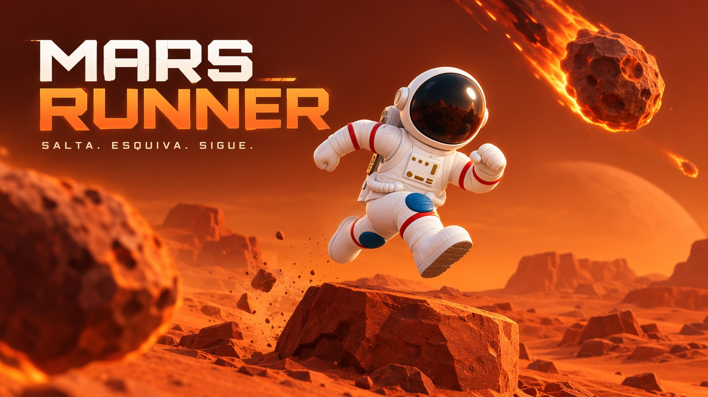
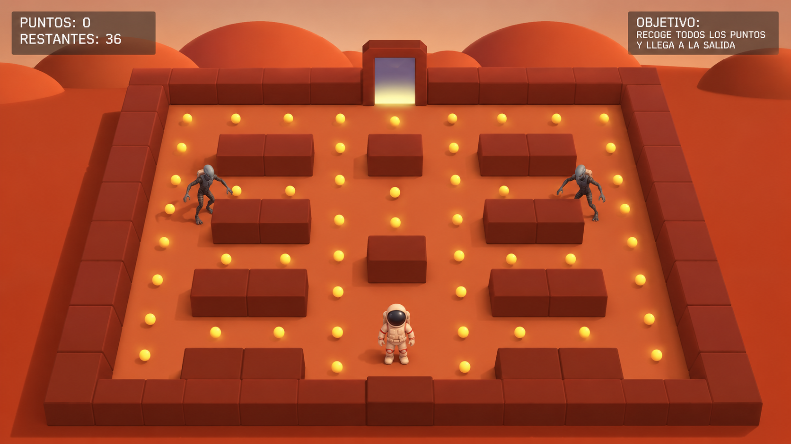
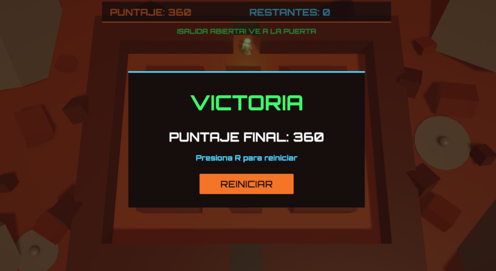
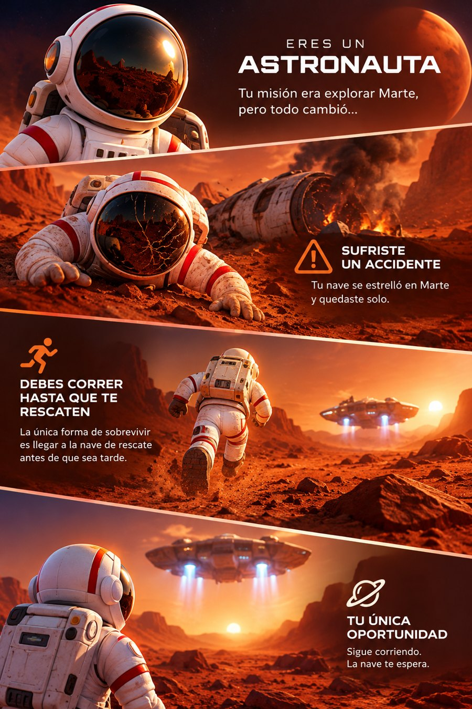
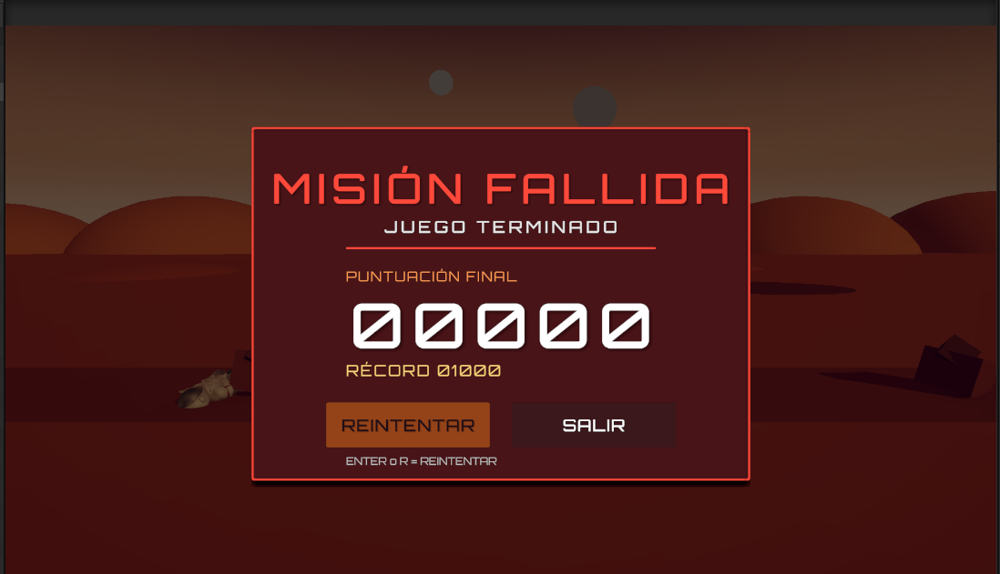

Endless runner · 3D
Endless runner · 3D
Reflejos y velocidad
Mars Runner
Corre sin detenerte, salta sobre las rocas y agáchate para esquivar los meteoritos. Alcanza 1000 puntos para llegar a la nave de rescate.
- 3 vidas
- 1000 puntos objetivo
- ↑ ↓ controles
Misión de rescate · Marte 2049
Un planeta hostil. Dos formas de sobrevivir.
Una tormenta de meteoritos destruyó tu nave. Corre y esquiva obstáculos en el modo endless runner, o explora el laberinto marciano, recoge todos los cristales y escapa de los aliens que lo patrullan.

Sector 07 · Superficie marcianaCentro de operaciones
Uno pone a prueba tus reflejos y el otro tu estrategia. Elige tu misión.
Endless runner · 3D
Reflejos y velocidad
Corre sin detenerte, salta sobre las rocas y agáchate para esquivar los meteoritos. Alcanza 1000 puntos para llegar a la nave de rescate.

Laberinto · ExploraciónEstrategia y sigilo
Recoge los 36 cristales de energía, abre la puerta de salida y escapa. Dos aliens patrullan el laberinto y te persiguen si te ven.
Misión de velocidad
Sobrevive el tiempo suficiente para alcanzar la nave de rescate.
Pulsa START para cargar la misión en esta ventana.
Requisitos
Cómo jugar
Misión de exploración
Tu orientación y tu estrategia deciden si sales con vida.
Pulsa START para cargar la misión en esta ventana.
Controles y reglas
Amenaza detectada
Galería del laberinto



Registro de la expedición
Empezó como una expedición científica. Ahora cada decisión separa volver a casa de desaparecer en Marte.

Archivo de misión · 2049Una misión científica llega a Marte para explorar su superficie, estudiar sus cráteres y recopilar datos del planeta rojo.
Una tormenta de meteoritos destruye la nave. El astronauta queda aislado, lejos de la base de rescate.
Al explorar un antiguo complejo, descubre que no está solo: criaturas de armadura luminosa patrullan el laberinto y custodian los cristales de energía.
Llegar a la nave de rescate, o recoger todos los cristales y cruzar la puerta del laberinto, es su única salida.
Personal de la misión
El último superviviente de la expedición.
Explorador científico con un traje espacial preparado para las condiciones extremas de Marte. Su agilidad y capacidad de reacción son esenciales para completar ambas misiones.
Amenaza clase A
Nadie ha salido del laberinto sin cruzarse con uno.
Criatura reptiliana de piel gris azulada, ojos rojos y armadura metálica recorrida por vetas de energía turquesa. Patrulla el laberinto en una ruta fija y, si detecta al astronauta, lo persigue sin descanso hasta alcanzarlo.
Consejo: rompe su línea de visión usando los bloques del laberinto y recoge los cristales cuando se alejen.

Manual del explorador
Domina los controles y reconoce cada amenaza antes de que sea tarde.
Flecha arriba
Evita las rocas marcianas a ras del suelo (Mars Runner).
Flecha abajo
Deslízate bajo los meteoritos que cruzan a tu altura (Mars Runner).
Flechas del teclado
Recorre el laberinto y recoge los cristales (Laberinto).
Tecla R
Vuelve a empezar tras ganar o perder (Laberinto).
Mars Runner
Laberinto marciano
Mars Runner


Informe técnico
Resumen de las características principales del proyecto.
Especificaciones
| Proyecto | Mars Runner |
|---|---|
| Géneros | Endless runner / Laberinto |
| Motor | Unity WebGL |
| Estilo | Sci-Fi / Low Poly |
| Controles | Teclado |
| Equipo | Warlings |
Progresión
La dificultad exige cada vez más precisión y capacidad de reacción.